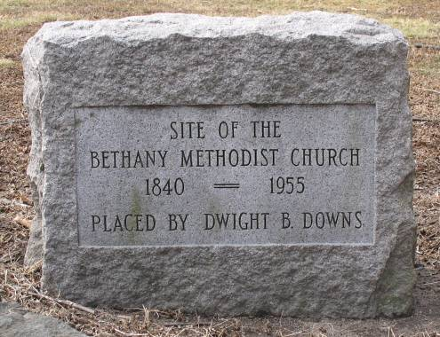

|
|
|
| Methodist
Cemetery Bethany, New Haven, CT |
|||
|
|

|
||
 |
NAME |
|
AGE |
PHOTO |
1934 |
| Aldrich, Maria (Goodspeed), wife of John Walker | 21
Jul 1941 |
75 |
PHOTO | ||
| Allen,
Birdsey |
19
Apr 1880 |
22 |
PHOTO | 1934 | |
| Allen,
Lena - daughter of Wells C. & Ann Eliza (Downs) |
4 |
1934 | |||
| Aspinwall,
George C. - son of George R. & Eliza Ann (Griswold) |
6
Oct 1858 |
2 |
PHOTO | ||
| Aspinwall, May E. - daughter of George R. & Eliza Ann (Griswold) | 17
Oct 1861 |
1 |
PHOTO | ||
| Atwater,
Anon - son of David & Lydia (Shephard) |
21
Feb 1869 |
73 |
PHOTO | 1934 | |
| Atwater, Friend A. - son of Anan & Rebecca (Peck) | 15
Mar 1861 |
19 |
PHOTO | 1934 | |
| Atwater, Jesse H. - son of Anan & Rebecca (Peck) | 21
Jun 1851 |
28 |
PHOTO | 1934 | |
| Atwater, Lucie M. - daughter of Anan & Rebecca (Peck) | 14
Sep 1901 |
78 |
PHOTO | 1934 | |
| Atwater, Polly - daughter of Anan & Rebecca (Peck) | 31
Dec 1852 |
20 |
1934 | ||
| Atwater,
Rebecca (Peck) - wife of Anon |
18
Aug 1868 |
68 |
PHOTO | 1934 | |
| Atwater, Rebeckah - daughter of Anan & Rebecca (Peck) | 6
Dec 1843 |
4 |
PHOTO | 1934 | |
| Atwater,
Wilber E. - son of Anan & Rebecca (Peck) |
12
Jun 1868 |
21 |
PHOTO | 1934 | |
| Bailey,
Albert - son of Selden & Susan P. |
19
Mar 1842 |
9 |
1934 | ||
| Bailey, Harriet - daughter of Selden & Susan P. | 22
Mar 1856 |
12 |
1934 | ||
| Bailey, Selden | 8
Feb 1856 |
48 |
PHOTO | 1934 | |
| Bailey,
Susan P. - wife of Selden |
25
Dec 1888 |
74 |
PHOTO | 1934 | |
|
Bailey, William H. - son of Selden & Susan P. | 8
May 1898 |
55 |
PHOTO | 1934 |
| Beach, Eliza P. (Anthony) - wife of Russell M. | 3
Feb 1911 |
79 |
1934 | ||
| Beach, Elmer J. - son of of Russell M. & Eliza P. (Anthony) | 30
Sep 1929 |
67 |
PHOTO | 1934 | |
| Beach, Elcie G. - daughter of Russell M. & Eliza P. (Anthony) | 1
Nov 1869 |
11 |
PHOTO | 1934 | |
| Beach,
Mary (Russell) - wife of Roger
Norton and widow of Major Hotchkiss |
29
Apr 1883 |
80 |
PHOTO | 1934 | |
| Beach, Mary J. - daughter of Russell M. & Eliza P. (Anthony) | 23
Dec 1874 |
15 |
1934 | ||
| Beach,
Rachel - daughter of Elmer & Mabel |
12
May 1905 |
3 |
1934 | ||
| Beach, Russell M. | 20
May 1908 |
77 |
1934 | ||
| Bigelow |
1934 | ||||
| Brooks,
Anna - wife of Thomas H. |
1914 |
63 |
PHOTO | 1934 | |
| Brooks,
Corintha (Andrews) - wife of
Sherald |
1885 |
76 |
1934 | ||
| Brooks,
Etta E. - daughter of Thomas H. & Anna |
24
Jun 1876 |
3 |
PHOTO | 1934 | |
| Brooks, Everett H. - son of Thomas H. & Anna | 18
Oct 1880 |
4m |
PHOTO | 1934 | |
| Brooks,
Sherald - son of Amasa & Polly (Bradley) |
1891 |
78 |
1934 | ||
|
Brooks,
Sherald A. - son of Sherald & Corintha (Andrews) |
14
Dec 1862 |
26 |
PHOTO | 1934 |
|
Brooks, Thomas H. - son of Sherald & Corintha (Andrews) | 1931 |
91 |
PHOTO | 1934 |
| Brooks,
Willey - son of Sherald A. & M. A. |
20
Aug 1860 |
9w |
PHOTO | 1934 | |
| Buckmiller,
Annie E. - wife of August |
26
Nov 1952 |
70 |
PHOTO | ||
| Buckmiller, August | 30
Sep 1944 |
64 |
PHOTO | ||
| Burns,
Manly H. |
3
Aug 1898 |
18 |
PHOTO | 1934 | |
| Burns,
Sarah |
29
Mar 1918 |
69 |
PHOTO | 1934 | |
| Cameron, Mary Anne S. - wife of Stanley R. | 27
Aug 1993 |
54 |
PHOTO | ||
| Cameron,
Stanley R. |
27
Sep 1997 |
59 |
PHOTO | ||
| Collins,
Catherine (McClure) - wife of
Darius |
5
Aug 1899 |
61 |
PHOTO | 1934 | |
| Cook,
John |
23
Sep 1867 |
67 |
PHOTO | 1934 | |
| Cook, Rachel P. - wife of John | 9
Aug 1874 |
76 |
PHOTO | 1934 | |
| Davis, John R. - son of Robert & Julia (Sanford) | 19
Nov 1880 |
43 |
PHOTO | 1934 | |
| Deming,
Delia M. - daughter of Mr. & Lucy |
6
Sep 1860 |
19 |
PHOTO | 1934 | |
| Deming,
Lucy - wife of Mr. |
5
Mar 1857 |
51 |
PHOTO | 1934 | |
| Donnell,
Charlie E. - son of George & Eliza |
10
Dec 1872 |
2 |
PHOTO | 1934 | |
| Donnell,
Eliza - 2d wife of George |
6
Nov 1880 |
36 |
1934 | ||
| Donnell,
George |
16
Feb 1875 |
35 |
PHOTO | 1934 | |
| Donnell, Jackson John - son of George & Eliza | 4
Dec 1872 |
6 |
PHOTO | 1934 | |
| Donnell,
Jane - 1st wife of George |
27
Sep 1859 |
21 |
PHOTO | 1934 | |
| Donnell,
William |
15
Apr 1862 |
20 |
PHOTO | 1934 | |
| Doolittle,
Alfred - son of Reuben & Rhoda (Wooding) |
11
Jan 1888 |
90 |
PHOTO | 1934 | |
| Doolittle, Anna Bell - daughter of Leonard & Kate (Moheley) | 8
Mar 1872 |
1 |
1934 | ||
| Doolittle, Bennett - son of Reuben & Rhoda (Wooding) | 3
Feb 1885 |
69 |
PHOTO | 1934 | |
| Doolittle,
Daniel H. - son of Aaron & Almira (Wilmot) |
30
Mar 1872 |
33 |
1934 | ||
| Doolittle, Delia E. (Lounsbury) - wife of Daniel H. | 23
Nov 1912 |
64 |
1934 | ||
| Doolittle,
Dennis W. - son of Bennett & Elizabeth Minerva (Warner) |
7
Feb 1898 |
55 |
1934 | ||
| Doolittle,
Elizabeth (Warner) - wife of
Alfred |
5
Apr 1896 |
95 |
PHOTO | 1934 | |
| Doolittle,
Elizabeth Minerva (Warner) -
wife of Bennett |
6
Jan 1892 |
70 |
PHOTO | 1934 | |
| Doolittle,
Elizur B. - son of Isaac & Ursala (Hoadley) |
1
Mar 1903 |
69 |
PHOTO | 1934 | |
| Doolittle,
Emma Eliza - daughter of Dennis W. & Rosa V. (Dorman) |
4
Feb 1883 |
3 |
1934 | ||
| Doolittle,
Evelinia J. (Dorman) - wife of
Dennis W. |
9
Sep 1877 |
28 |
1934 | ||
|
Doolittle,
Gordon L. |
14
Apr 1920 |
64 |
PHOTO | |
| Doolittle,
Harold G. - son of Lewis Grant & Mary E. (Dorman) |
12
Aug 1886 |
9m |
PHOTO | 1934 | |
| Doolittle, Kate (Moheley) - wife of Leonard Wales | 2 May 1885 | 40 |
1934 | ||
| Doolittle,
Laura E. - daughter of Alfred & Elizabeth (Warner) |
3
Oct 1864 |
40 |
PHOTO | 1934 | |
| Doolitlle,
Leonard Wales - son of Jesse Allen & Mary Ann (Todd) |
10
Oct 1923 |
76 |
1934 | ||
| Doolittle,
Lewis Grant |
1942 |
81 |
PHOTO | ||
| Doolittle,
Mary E. (Dorman) - wife of
Lewis Grant |
1934 |
70 |
PHOTO | 1934 | |
| Dorman,
Eliza - wife of Philos L. |
9
Jul 1890 |
64 |
PHOTO | 1934 | |
| Dorman, Philos L. | 23
Apr 1888 |
64 |
PHOTO | 1934 | |
| Downs,
Alta Hotchkiss (Porter) - wife
of Jerome Andrew |
10
Dec 1924 |
87 |
1934 | ||
| Downs, Alta H. - daughter of Jerome Andrew & Alta Hotchkiss (Porter) | 6
Jan 1871 |
2m |
1934 | ||
| Downs,
Ann (Andrew) - wife of
Kneeland |
6
Aug 1889 |
82 |
PHOTO | 1934 | |
| Downs, Beverly (Scott) - wife of Elbert Newton | 13
Aug 1995 |
64 |
PHOTO | ||
| Downs,
Catherine A. (Bailey) - wife
of Elbert P. |
1913 |
74 |
PHOTO | 1934 | |
| Downs,
Dwight Baldwin - son of Jerome Andrew & Josephine E. (Nettleton) |
3
Jul 1976 |
73 |
PHOTO | ||
| Downs,
Elbert Newton |
18
Jun 1990 |
67 |
PHOTO | ||
| Downs,
Elbert P. - son of Jareb Lyman & Amy (Sperry) |
1900 |
68 |
PHOTO | 1934 | |
| Downs, Florance (Buckmiller) - wife of Kneeland Porter | 1973 |
71 |
PHOTO | ||
| Downs,
Florence A. (Rathburn) - wife
of Jermome Andrew |
3
Feb 1894 |
23 |
1934 | ||
| Dwons, Florence Faith - daughter of Jermome Andrew & Florence A. (Rathburn) | 22
Nov 1913 |
19 |
1934 | ||
|
Downs, Jerome Andrew - son of Kneeland & Ann (Andrews) | 8
Mar 1904 |
65 |
1934 | |
|
Downs, Jerome Andrew, 3d - son of Jerome Andrew & Florence A. (Rathburn) | 16
Feb 1957 |
64 |
PHOTO | |
| Downs,
Kneeland - son of Isaac & Mabel (Perkins) |
30
Sep 1864 |
55 |
PHOTO | 1934 | |
| Downs,
Kneeland Porter - son of Jerome Andrew & Josephine E. (Nettleton) |
1973 |
71 |
PHOTO | ||
| Downs, Lillian - daughter of Elbert P. & Catherine A. (Bailey) | 1934 |
74 |
PHOTO | 1934 | |
| Downs,
Minnie Rebecca McClure (Collins) |
1947 |
87 |
PHOTO | ||
| Downs,
Susan Scott |
7
Feb 1981 |
22 |
PHOTO | ||
| Downs, Theodora May - daughter of Elbert P. & Catherine A. (Bailey) | 8
Apr 1876 |
1m |
PHOTO | 1934 | |
| Downs, Theodore - son of Elbert P. & Catherine A. (Bailey) | |||||
| Gehringer, Catherine I. (Strom) - wife of George Henry | 6
May 1984 |
58 |
PHOTO | ||
| Gehringer, George Henry | 10
May 2003 |
77 |
PHOTO | ||
| Gray,
Delphine (Hitchcock) - wife of
Thompson D. |
PHOTO | ||||
| Gribus,
Lesco |
1923 |
1934 | |||
| Haines, Ethel (Aldrich) - wife of William | 1981 |
76 |
PHOTO | ||
| Haines, William | 24
Oct 1938 |
42 |
PHOTO | ||
| Hitchcock, Dimun | 1890 |
76 |
PHOTO | 1934 | |
| Hitchcock,
Ira - son of Isaac & Mary (Bradley) |
26
Jan 1878 |
74 |
PHOTO | 1934 | |
| Hitchcock,
John - son of Ira & Diantha |
11
Mar 1864 |
28 |
PHOTO | 1934 | |
| Hitchcock,
Mary Ann (Fairchild) - wife of
Dimun |
1882 |
66 |
PHOTO | 1934 | |
| Hoadley,
George T. - son of Denzel Burwell & Anna J. (Moakley) |
8
Jan 1890 |
14 |
PHOTO | 1934 | |
| Hoadley, Jessie L. - child of Denzel Burwell & Anna J. (Moakley) | 18
Apr 1883 |
1 |
PHOTO | 1934 | |
| Hosley,
Laura E. (McClure) - wife of
Albert H. |
1923 |
70 |
PHOTO | 1934 | |
| Hotchkiss,
Elitha - wife of Silas |
16
May 1886 |
74 |
PHOTO | 1934 | |
| Hotchkiss,
Herbert - son of Adrian & Fannie H. |
20
Jul 1905 |
19 |
PHOTO | ||
| Hotchkiss,
Silas - son of Silas & Lydia (Warner) |
20
Jan 1899 |
86 |
PHOTO | 1934 | |
|
Hunter,
Archer D. |
7
Oct 1928 |
50 |
PHOTO | 1934 |
| Johnson,
Dawn C. |
1986 |
29 |
PHOTO | ||
|
Johnson,
Harry E. |
26
Oct 1983 |
52 |
PHOTO | |
| Johnson,
Robert A. |
21
Sep 1966 |
11 |
PHOTO | ||
| Johnson,
Shirley C. |
1971 |
35 |
PHOTO | ||
| Keeler, Ella M. (Holden) - wife of John H. | 1933 |
72 |
PHOTO | 1934 | |
| Keeler,
Everett Holden |
19
Dec 1945 |
59 |
PHOTO | ||
| Keeler,
Jessie Ricketts |
19
Apr 1950 |
62 |
PHOTO | ||
| Keeler, John H. | 1940 |
91 |
PHOTO | 1934 | |
| LaRocque, Sarah Durley | 1952 |
75 |
PHOTO | ||
| Lounsbury, Birdsey - son of William H. & Susan A. | 28
May 1876 |
1 |
1934 | ||
| Lounsbury,
Charity (Buckingham) - wife of
William H. |
21
Oct 1865 |
52 |
1934 | ||
| Lounsbury,
Henry Bird - son of Henry D. & Sarah Wilkenson (Griswold) |
13
Jun 1861 |
1 |
1934 | ||
| Lounsbury, Henry D. | 1886 |
67 |
PHOTO | 1934 | |
| Lounsbury, Irvin - son ofWilliam H. & Charity (Buckingham) | 23
Nov 1912 |
18 |
1934 | ||
| Lounsbury,
Sarah Wilkenson (Griswold) -
wife of Henry D. |
1883 |
54 |
PHOTO | 1934 | |
| Lounsbury,
William H. - son of Eri & Sarah (Carrington) |
14
Nov 1900 |
85 |
1934 | ||
| McClure,
Ellen - wife of Mr. |
16
Jan 1879 |
92 |
PHOTO | 1934 | |
| McClure,
Hannah - daughter of William & Hannah (Leipsett) |
1916 |
73 |
PHOTO | 1934 | |
| McClure, Hannah (Leipsett) - wife of William | 13
May 1894 |
76 |
PHOTO | 1934 | |
| McClure, James E. - son of William & Hannah (Leipsett) | 28
Sep 1893 |
35 |
1934 | ||
| McClure, Richard C. - son of William & Hannah (Leipsett) | 19
Jun 1906 |
46 |
1934 | ||
| McClure, Robert - son of William & Hannah (Leipsett) | 15
Jun 1908 |
63 |
1934 | ||
| McClure,
William - son of Mr. & Ellen |
22
Jul 1869 |
58 |
PHOTO | 1934 | |
| Mix,
Atwater |
26
Apr 1860 |
29 |
1934 | ||
| Mix,
Ervin - son of Titus & Amanda |
1898 |
78 |
1934 | ||
| Mix,
Margaret A. (Atwater) - wife
of Ervin |
26
Apr 1860 |
29 |
PHOTO | 1934 | |
| Nichols,
Mary (Atwater) - wife of
William |
27
Oct 1902 |
81 |
PHOTO | 1934 | |
| Parker, Anna M. (Donnell) - wife of Frederick A. | 9
Mar 1872 |
24 |
PHOTO | 1934 | |
| Patterson, Hannah J. - wife of James M. | 14
Nov 1862 |
37 |
PHOTO | 1934 | |
| Patterson,
James W. - son of James M. & Hannah J. |
19
Nov 1862 |
6m |
1934 | ||
|
Peck, Elisha | 17
Jun 1904 |
57 |
PHOTO | 1934 |
| Peck, Fanny (Ball) - wife of George Frederick | 7
Nov 1857 |
76 |
PHOTO | 1934 | |
| Peck,
George Frederick - son of Jonathan Mansfield & Elizabeth (Andrews) |
25
Mar 1860 |
79 |
PHOTO | 1934 | |
| Peck, Henry - son of George Frederick & Fanny (Ball) | 5
Sep 1816 |
7 |
PHOTO | 1934 | |
| Peck, Jonathan M. - son of George Frederick & Fanny (Ball) | 6 Oct 1822 | 19 |
PHOTO | 1934 | |
| Peck, Milow - son of George Frederick & Fanny (Ball) | 30
Aug 1816 |
3 |
PHOTO | 1934 | |
| Peck,
Stiles |
4
Feb 1850 |
47 |
PHOTO | 1934 | |
| Perkins,
Ellen A. - wife of Henry W. |
19
Feb 1883 |
42 |
1934 | ||
| Perkins, Emily E. (Sanford) - wife of Henry W. | 29
Apr 1873 |
33 |
PHOTO | 1934 | |
| Perkins, Harriet C. - wife of Henry W. | 28
Jan 1859 |
28 |
PHOTO | 1934 | |
| Perkins, Henry W. | 1911 |
81 |
1934 | ||
| Perkins,
Nellie A (Todd) - wife of Jay
W. |
9
May 1882 |
24 |
PHOTO | 1934 | |
| Pitcher, Dantie E. (Hitchcock) - wife of Frank W. | 6 Nov 1872 | 23 |
PHOTO | 1934 | |
| Preston,
Horace |
17
Nov 1863 |
57 |
PHOTO | 1934 | |
| Preston,
Rhoda (Andrews) - wife of
Horace |
30
Dec 1866 |
63 |
PHOTO | 1934 | |
| Quinn,
Frances P. D. - wife of William M. |
24
Jun 1995 |
96 |
PHOTO | ||
| Riley,
Elizabeth Phelan |
10
Oct 1948 |
69 |
PHOTO | ||
| Riley,
George T. |
1940 |
22 |
PHOTO | ||
| Riley,
Henry Arnold |
25
Feb 1934 |
53 |
PHOTO | ||
| Riley,
William Donald |
10
Feb 1943 |
59 |
PHOTO | ||
| Sanford, Amon B. - son of Almeron & Polly Abigail (Matthews) | 3
Jun 1870 |
18 |
PHOTO | 1934 | |
| Sanford,
Esther |
30
Mar 1851 |
81 |
PHOTO | 1934 | |
| Sanford,
Polly Abigail (Matthews) -
wife of Almeron |
10
Apr 1882 |
67 |
PHOTO | 1934 | |
| Sanford,
Ruel - son of Truman & Betsey (Warner) |
30
May 1871 |
69 |
PHOTO | 1934 | |
| Sanford,
Sarah (Bishop) - wife of Ruel |
1
Jun 1861 |
62 |
PHOTO | 1934 | |
| Saxton,
Charlotte (Phelps) - wife of
Wallace Weeks |
1990 |
87 |
PHOTO | ||
| |
Saxton, Wallace Weeks | 21
Jul 1949 |
49 |
PHOTO | |
| Schreyer,
Frances S. - wife of George C. |
1932 |
55 |
PHOTO | ||
| Schreyer, George C. | 1966 |
90 |
PHOTO | ||
| Schreyer, Henry - son of George C. & Frances S. | 1913 |
6 |
PHOTO | ||
| Scott,
Marjorie (Brigham) - wife of
Raymond Earl |
27
Aug 2004 |
94 |
PHOTO | ||
| Scott, Raymond Earl | 8
Mar 1984 |
86 |
PHOTO | ||
| Smith,
Mildred S. - wife of Henry |
22
Jun 1991 |
94 |
PHOTO | ||
| Sperry,
Amos - son of Jared & Esther (Sanford) |
11
Nov 1867 |
70 |
PHOTO | 1934 | |
| Stickney,
Adeline (Atwater) - wife of
Moses |
16
Nov 1918 |
83 |
PHOTO | 1934 | |
| Strom,
Isabelle I. (Downs) - wife of
Victor |
1966 |
73 |
PHOTO | ||
| Strom,
Lawrence |
1968 |
67 |
PHOTO | ||
| Strom,
Mary |
1915 |
48 |
PHOTO | ||
| Strom,
Victor |
1984 |
94 |
PHOTO | ||
| Thompson, Alta Sarah (Downs) - wife of Roy N. | 1961 |
62 |
PHOTO | ||
| Thompson, Debra Ann | 4
Oct 1969 |
14 |
PHOTO | ||
|
Thompson,
Robert N. |
1986 |
59 |
PHOTO | |
| Thompson, Roy N. | 1983 |
82 |
PHOTO | ||
| Todd,
Herbert S. - son of Jasper E. & Mary |
23
Oct 1862 |
14 |
PHOTO | 1934 | |
| Todd, Jasper E. | 1889 |
74 |
1934 | ||
| Todd, Mary - wife of Jasper E. | 1866 |
48 |
1934 | ||
| Warner,
Burton D. |
PHOTO | ||||
| Warner, Esther A. (Sperry) - wife of George W. | 22
Nov 1874 |
30 |
PHOTO | 1934 | |
| Warner,
George W. - son of Alonzo & Ruth Ann (Chatfield) |
7
Apr 1872 |
27 |
PHOTO | 1934 | |
| Warner, Ida M. (Frink) - wife of Burton D. | 1931 |
53 |
PHOTO | 1934 | |
| Warner, Jennie E. - daughter of John J. & Mary Downs (Smith) | 1895 |
23 |
1934 | ||
| Warner,
Joella D. |
8
Nov 1994 |
55 |
PHOTO | ||
|
Warner,
John J. |
1915 |
75 |
1934 | |
| Warner, Mary Downs (Smith) - wife of John J. | 1903 |
59 |
1934 |
| Home Cemeteries Genealogy Library Email |